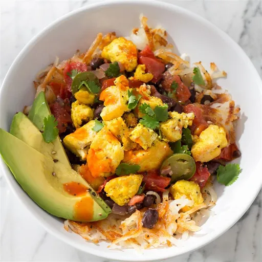

Ultimate Tofu Breakfast Burrito Bowls

Description
Tofu scrambles up just like eggs, and with some clever spices,
even non-vegans will barely notice the difference. Try setting
out toppings to let family or guests assemble their own burrito
bowls.
Ingredients
- 3 tablespoons olive oil, divided
- 1 (14 ounce) package extra-firm tofu, drained
- ½ teaspoon salt
- black pepper to taste
- 1 ½ teaspoons onion powder
- 1 ½ teaspoons garlic powder
- ½ teaspoon ground tumeric
- 1 tablespoon fresh lemon juice
- 1 tablespoon olive oil
- 1 cup finely diced red onion
- 2 jalapeno peppers, seeded and chopped
- ½ teaspoon salt
- 3 cloves garlic, minced
- 2 cups chopped tomatoes
- 1 ½ teaspoons cumin
- ¼ cup chopped fresh cilantro
- 1 tablespoon fresh lemon juice
- 1 (15.5 ounce) can no-salt-added black beans, drained and rinsed
- 1 ½ cups cooked hash brown potatoes
- 1 avocado - peeled, pitted and sliced
- 1 teaspoon fresh lemon juice
- ¼ cup chopped fresh cilantro
- 1 teaspoon hot sauce, or to taste
Steps
-
Preheat a large, heavy skillet over medium-high heat.
Add 2 tablespoons oil. Break tofu apart over skillet into
bite-size pieces, sprinkle with salt and pepper, then cook,
stirring frequently with a thin metal spatula, until liquid
cooks out and tofu browns, about 10 minutes.(If you notice
liquid collecting in pan, increase heat to evaporate water.)
Be sure to get under the tofu when you stir, scraping the bottom
of the pan where the good, crispy stuff is and keeping it from
sticking.
-
Add onionturmeric, juice, and remaining
tablespoon oil and toss to coat. Cook 5 minutes more.
-
Preheat a heavy-bottomed saucepan over medium-high heat. Add oil.
Cook onion and jalapenos with a pinch of salt, stirring, until
translucent, about 5 minutes, Add garlic and cook, stirring, until
fragrant, about 30 seconds. Add tomatoes, cumin, and remaining salt,
and cook, stirring, until tomatoes become saucy, about 5 minutes.
Add cilantro and lemon juice. Let cilantro wilt in. Add beans and
heat through, stirring occasionally, about 2 minutes. Taste for
salt and seasoning.
-
Spoon some hash browns into each bowl, followed by a scoop of beans
and a scoop of scramble. Top with avocado, a squeeze of fresh lemon
juice, and a sprinkle of cilantro. Serve with hot sauce.